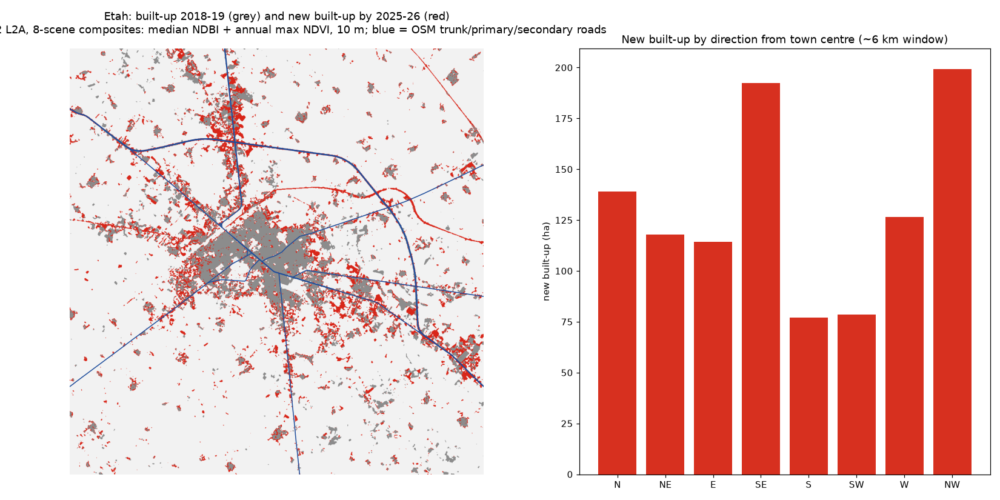

A satellite change analysis of Etah town and its surroundings (window of about 12 × 12 km). It uses Sentinel-2 L2A imagery (ESA Copernicus, via Microsoft Planetary Computer) and OSM major roads.

Built-up 2018-19: 1340.5 ha → 2025-26: 2183.9 ha. Newly built-up pixels: 1044.6 ha.
| Direction from centre | New built-up (ha) |
|---|---|
| N | 139.0 |
| NE | 117.9 |
| E | 114.4 |
| SE | 192.3 |
| S | 77.0 |
| SW | 78.4 |
| W | 126.4 |
| NW | 199.3 |
| Road | New built-up (ha) |
|---|---|
| NH34 | 174.5 |
| NH321G | 102.0 |
| MDRxxW | 96.9 |
| primary | 52.7 |
| MDR90W | 49.5 |
| MDR98W | 47.0 |
| SH85 | 41.4 |
| trunk | 29.9 |
A 10-year series (Landsat 2015 plus Sentinel-2) with accuracy assessment on Google Earth/Planet reference points, building-footprint counts (Google Open Buildings or Microsoft footprints, 2016 vs 2023 or later) to quantify houses, not just area, a ward/nagar boundary join with growth tables for established and emerging nagars, a direction and road-corridor ranking, maps, and a short written report.
Prepared by Nurtac Suleymanzade, PhD (Geography): GIS & spatial analysis. Built with Python (geopandas, rasterio, statsmodels, PySAL). Portfolio home